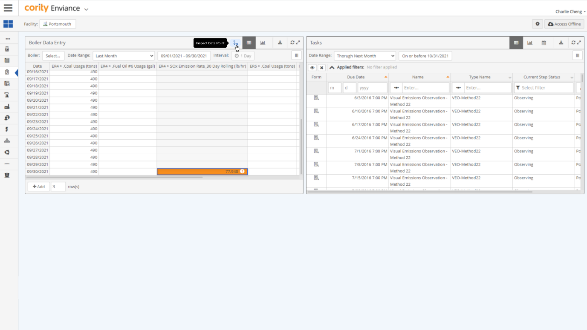
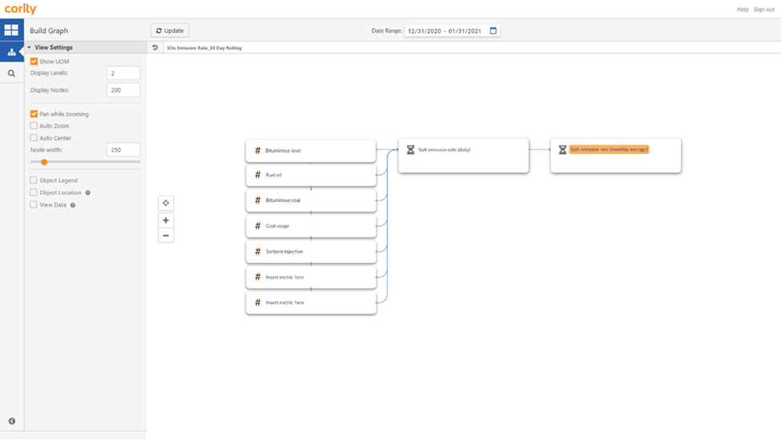

Accessing the Calc Graph Visualizer from the Portal
To access the Calc Graph Visualizer from the Portal
- Navigate to a Data Entry panel in the Portal.
- Click the Inspect Data Point button.
This button will only be available for panels where data type is numeric.

- Click on a cell in the Data Entry panel. The Calc Graph Visualizer window will open in a new tab.
Content on this window is read only and cannot be edited.
